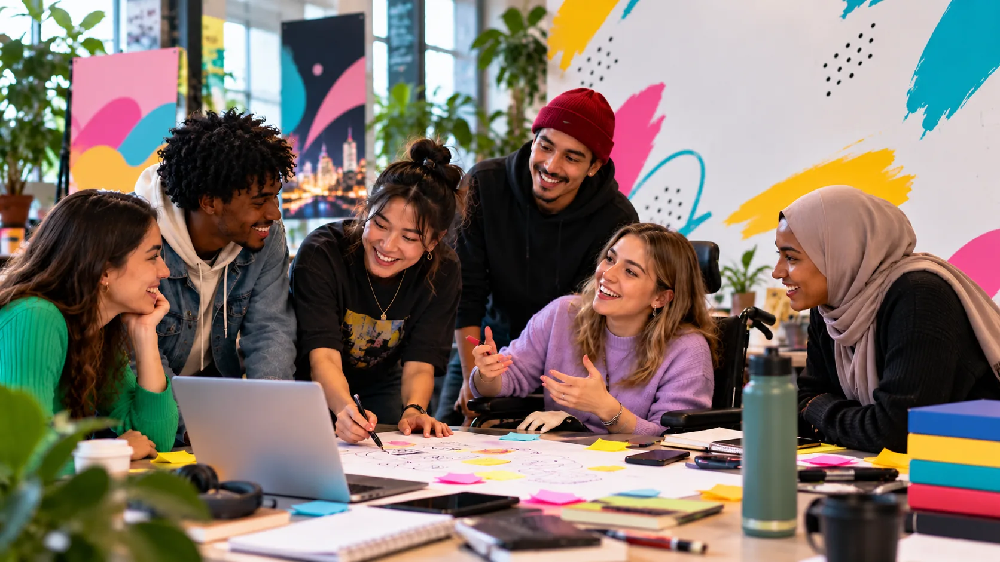
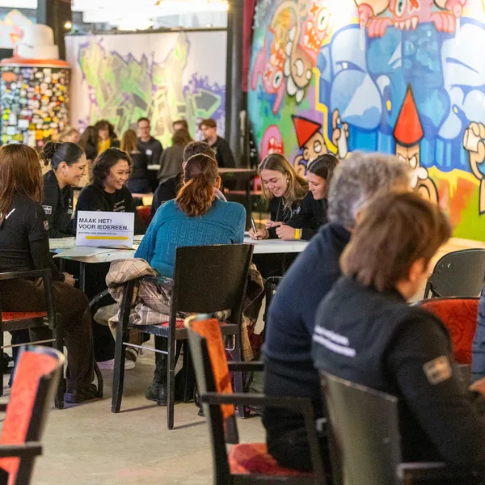

Mind the Difference
Different studies. Different backgrounds.
Different perspectives. One Masterclass.
Deuren open om 15:30 uur, het programma begint om 16:00 uur en eindigt om 18:30 uur. Daarna is er een borrel.
Doors open at 3:30 PM. The programme runs from 4:00 PM to 6:30 PM, with drinks afterwards.
Meld je aan → Sign up →Wat is Mind the Difference?
What is Mind the Difference?
Je ontmoet studenten van andere opleidingen, uit andere landen en met andere achtergronden. En mensen die regelmatig merken dat iets niet voor hen gemaakt is, bijvoorbeeld omdat zij een rolstoel gebruiken, slecht zien of horen, of sneller overprikkeld raken.
Meestal ligt het niet aan mensen zelf dat ze ergens niet aan mee kunnen doen, maar aan een ontwerp dat bedacht is voor een kleine groep. Dat kan anders, en dat heet Design for All: vanaf je eerste idee denk je na over de vraag hoe iedereen er straks iets aan heeft.
De cultuursector is ons speelveld en inspiratiebron. Via kunst, persoonlijke verhalen en voorbeelden uit de praktijk kom je op ideeën die je meeneemt naar je eigen vak.
You'll meet students from other courses, other countries and other backgrounds. And people who regularly find that something wasn't made with them in mind, for example because they use a wheelchair, have low vision or hearing loss, or are more easily overwhelmed.
Most of the time it isn't people who fall short, but a design made for a small group. It can be done differently, and that is what Design for All means: from your very first idea, you think about how everyone will get something out of it.
The cultural sector is our playing field and our source of inspiration. Through art, personal stories and real examples, you pick up ideas you can take back to your own field.
Waar de middag over gaat
What the afternoon is about
Wie ontbreekt er aan tafel?
Wat als verschil de bron van innovatie is?
Wanneer voelde jij je voor het laatst buitengesloten?
Wat wordt mogelijk wanneer iedereen kan meedoen?
Who's missing from the table?
What if difference is the source of innovation?
When did you last feel left out?
What becomes possible when everyone can take part?
Wat ga je doen?
What will you do?
Geen lange lezingen, maar een afwisselend programma.
No long lectures. Instead, expect a varied and interactive programme.
Experience
We beginnen zonder uitleg. Je ervaart het.
We start without any explanation. You simply experience it.
Discover
Een interactieve talk over verschil, perspectief en innovatie, door Ronald Ligtenberg. Hij noemt zichzelf trouble seeker: iemand die opzoekt wat niet werkt en er iets beters van maakt.
An interactive talk about difference, perspective and innovation, by Ronald Ligtenberg. He calls himself a trouble seeker: someone who goes looking for what does not work and turns it into something better.
Mix it up
Er zijn drie korte themasessies, je kiest er twee. In kleine groepen ga je in gesprek met andere studenten. Elke sessie heeft twee gespreksleiders, waarvan één uit eigen ervaring weet hoe het is als iets niet voor jou gemaakt is.
There are three short themed sessions and you choose two. In small groups you talk with other students. Each session has two hosts, one of whom knows from experience what it's like when something wasn't made with you in mind.
Meet
Een drankje, een snack, nieuwe ontmoetingen en de lancering van de Mind the Difference Challenge.
A drink, a snack, new faces and the launch of the Mind the Difference Challenge.
Nederlands of Engels? Allebei
Dutch or English? Both
De Masterclass is voor Nederlandstalige en internationale studenten.
Wordt er Nederlands gesproken, dan lees je mee in het Engels, en andersom. Daar zorgt een schrijftolk voor. In de themasessies vatten de begeleiders samen en vertalen ze waar nodig.
The Masterclass is for Dutch-speaking and international students.
When Dutch is spoken, you can follow along in English, and the other way round. A speech-to-text interpreter takes care of that. In the themed sessions the hosts summarise and translate where needed.
Je Engels hoeft dus niet perfect te zijn. And you don't need to speak Dutch.
So your English doesn't need to be perfect. En Nederlands hoef je niet te spreken.

Mind the Difference Challenge
Find your difference. Make a difference.
Aan het eind van de middag lanceren we de Challenge. Meedoen mag, hoeft niet.
Lees wat de Challenge inhoudt
Kies iets dat niet voor iedereen goed werkt: een app, festival, website, studieomgeving, café, game of product. Of pak een echt vraagstuk van een Haagse organisatie. Bedenk hoe het beter kan, samen met twee of drie studenten die níét hetzelfde studeren, denken of meemaken. Werk het uit in een idee dat je kunt laten zien en uitleggen.
Wat levert het je op? Je leert door te doen, werkt samen met culturele instellingen en ervaringsdeskundigen en bouwt zo aan een netwerk in de stad. Je presenteert je idee begin 2027, datum en plek volgen. Hoe ver je gaat, bepaal je zelf.
Goede ideeën kunnen we misschien samen verder brengen, met geld van de gemeente of hulp uit ons netwerk. En wie weet gebruik je het voor een scriptie, paper of stage.
At the end of the afternoon we launch the Challenge. Join in if you want to, but there is no obligation.
Read what the Challenge involves
Pick something that doesn't work for everyone: an app, a festival, a website, a study space, a café, a game or a product. Or take on a real question from an organisation in The Hague. Work out how it could be better, together with two or three students who don't all study, think or experience things the same way. No lengthy report, just an idea you can show and explain.
What's in it for you? You learn by doing, work with cultural organisations and people with lived experience, and build a network in the city. You present your idea in early 2027, date and venue to follow. How far you take it is up to you.
Good ideas we may be able to take further together, with funding from the city council or help from our network. And who knows, you might use it for a thesis, a paper or a placement.
Toegankelijkheid: dit is er geregeld
Accessibility: what we've arranged
De ingang van The Grey Space in the Middle is gelijkvloers. Je kunt met een rolstoel overal komen, ook in de zaal en op het toilet. Je kunt tussendoor altijd even weggaan.
Heb je iets nodig om erbij te kunnen zijn, bijvoorbeeld een tolk? Laat het ons zo snel mogelijk weten. Wat we zelf kunnen regelen, doen we met liefde. Krijgen we het niet voor elkaar? Dan proberen we samen een oplossing te vinden.
The entrance of The Grey Space in the Middle is step-free. You can get everywhere in a wheelchair, including the hall and the toilet. You can leave the room at any time.
Do you need anything to be able to join us, a sign language interpreter for example? Let us know as soon as you can. Whatever we can arrange ourselves, we will gladly do. And if we can't manage it, we will look for a solution together.
Meld je aan
Sign up
Gratis toegang. Vul je gegevens in en je krijgt binnenkort een bevestiging.
Free entry. Fill in your details and you'll get a confirmation soon.